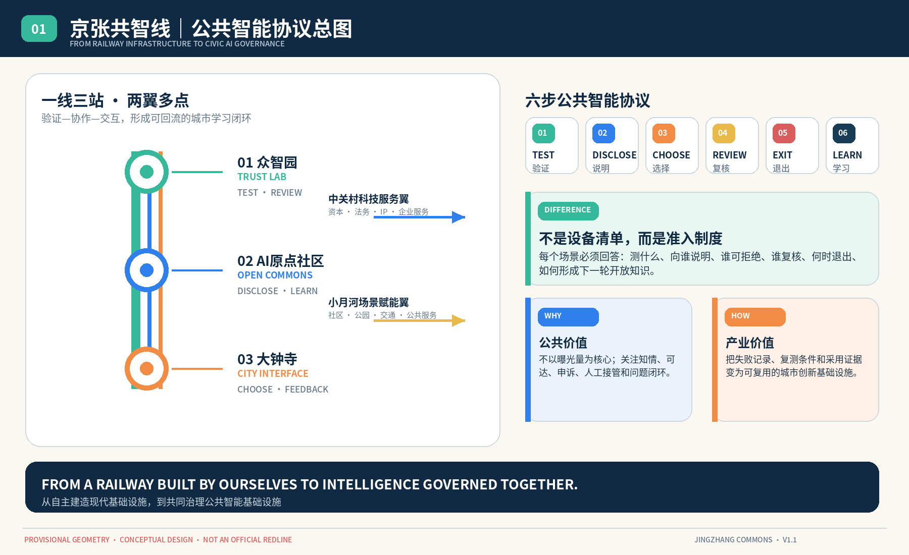
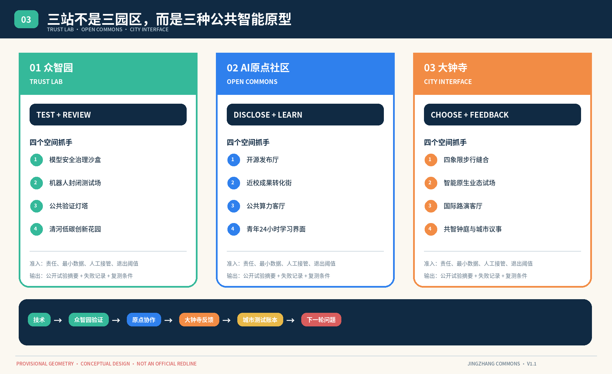
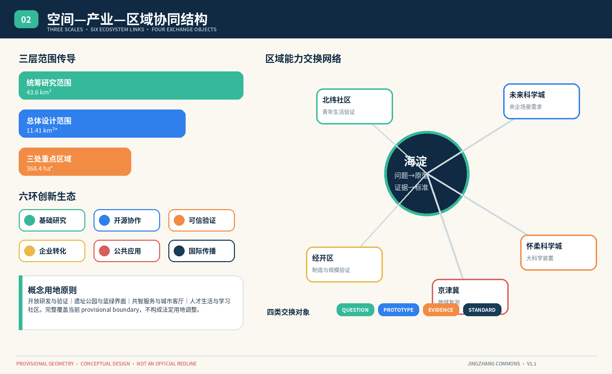
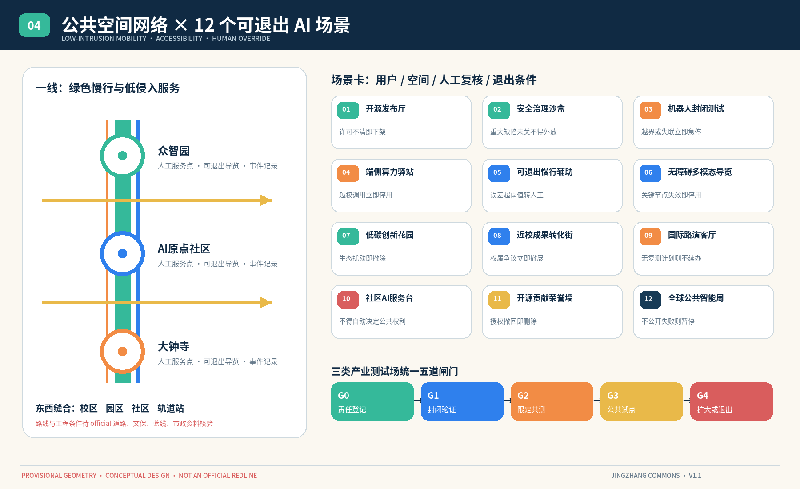
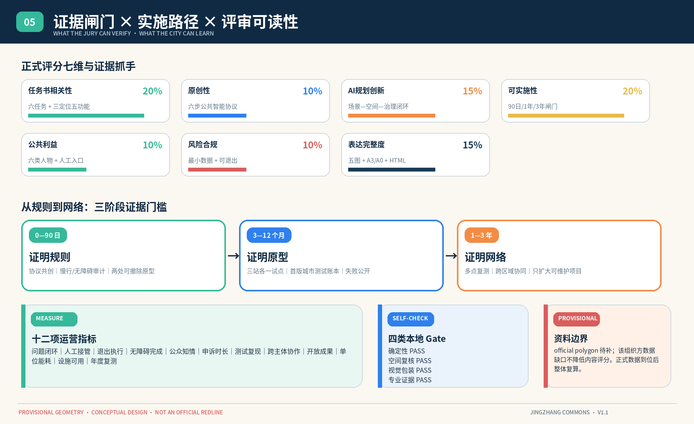

成果导航与核心指标
总览地图、三层范围、重点区域、用地分区、交通慢行、蓝绿公共空间、建筑、更新项目、AI 场景、核心指标、任务覆盖、自检状态、来源与假设均在本页和正式方案中展开。
总体设计范围
概念绿地率
概念公共空间率
六步公共智能协议
每个进入公共空间的 AI 场景都必须完成六问。不能说明、不能复核或不能退出的项目，不进入下一阶段。

一线三站，两翼多点
三站不是三个园区，而是 AI 从技术进入城市的三个责任阶段。
众智园｜可信验证
安全沙盒、机器人封闭测试、端侧算力审计与公共验证灯塔。
AI 原点社区｜开放协作
开源发布、成果转化、青年学习、法务与知识产权公共服务。
大钟寺｜城市交互
步行缝合、智能原生业态试场、国际路演与城市反馈。

区域创新不是连线，而是能力交换
海淀与北纬社区、未来科学城、怀柔科学城、经开区及京津冀伙伴交换问题、原型、证据和标准。

12 个场景，每个都有退出条件
场景不是功能名词，而是用户、空间、最小数据、人工复核、指标与失败退出的完整协议。

90 日、1 年、3 年：用证据决定是否扩大
协议共创、慢行与无障碍审计、两处可撤除原型。
三站各一受控试点，发布首版城市测试账本。
跨区域复测，只扩大可复现、可审计、可维护的项目。

七个案例，只转译机制
| 案例 | 可用机制 | 京张转译 | 不照搬 |
|---|---|---|---|
| Vector Institute | 研究—人才—组织应用 | 研究—评测—采用接口 | 企业规模与采用承诺 |
| Mila | 研究共同体和实践社区 | 跨机构实践共同体 | 原机构治理数据 |
| Station F | 模块化创业服务 | 科技服务翼服务菜单 | 投资额和企业成绩 |
| King’s Cross | 铁路遗产与知识区 | 遗址公园共享前厅 | 地产开发强度 |
| Kendall Square | 人才近邻与技术转化 | 近校成果转化街 | 土地和建筑结论 |
| Testbed Helsinki | 真实城市开放测试 | 公开申请和结果发布 | 国外审批规则 |
| 深圳南山 | 全链服务和场景对接 | 两翼要素与场景接口 | 补贴、产值和招商承诺 |
自检与证据状态
正式状态以提交中的 self_check.json 为准。official boundary/key-area polygons 到位后，将整体重算图层、指标、图纸和 HTML。
来源、版权与假设
项目与案例来源
官方公告、Agent 任务书、site package、source registry、processed fact pack，以及 Vector Institute、Mila、Station F、King’s Cross、MIT、Testbed Helsinki、深圳南山区政府和北京市政府公开页面。完整记录见 sources.json 与 proposal.md。
原创与使用边界
方案文字、图解、HTML 和 PDF 为本次 AI 协作生成；未使用商业地图瓦片、外部图片、企业 Logo、人物肖像或未清权字体。所有空间和运营建议均为概念建议，不构成政府审定、工程可行性或实施承诺。